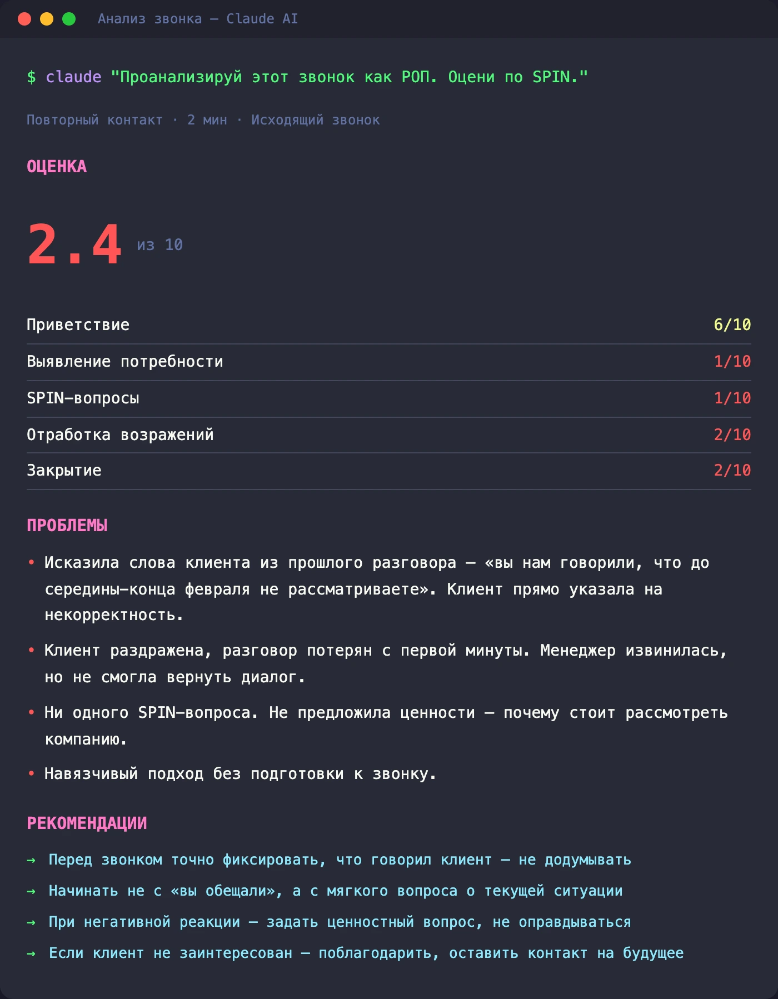
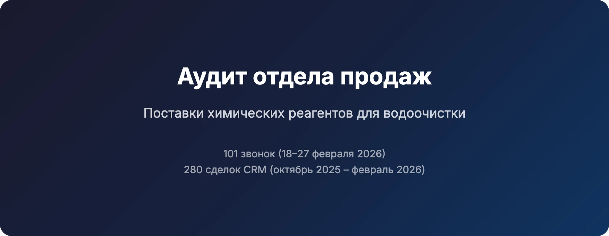
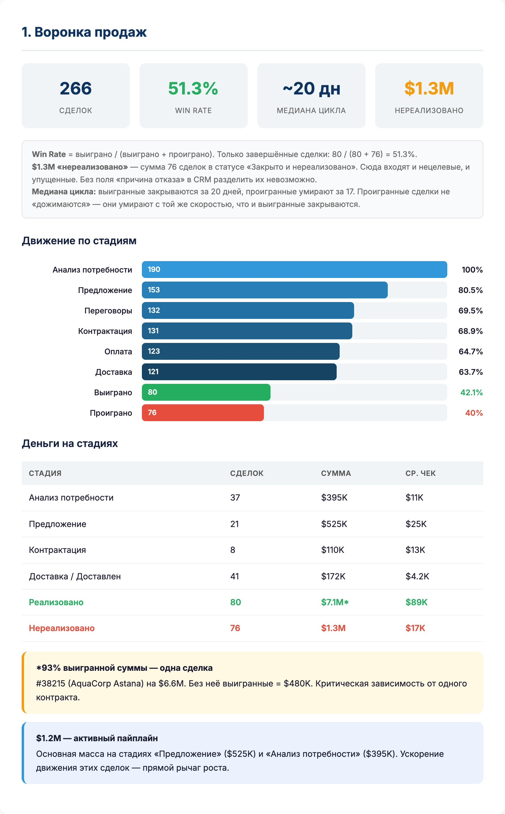
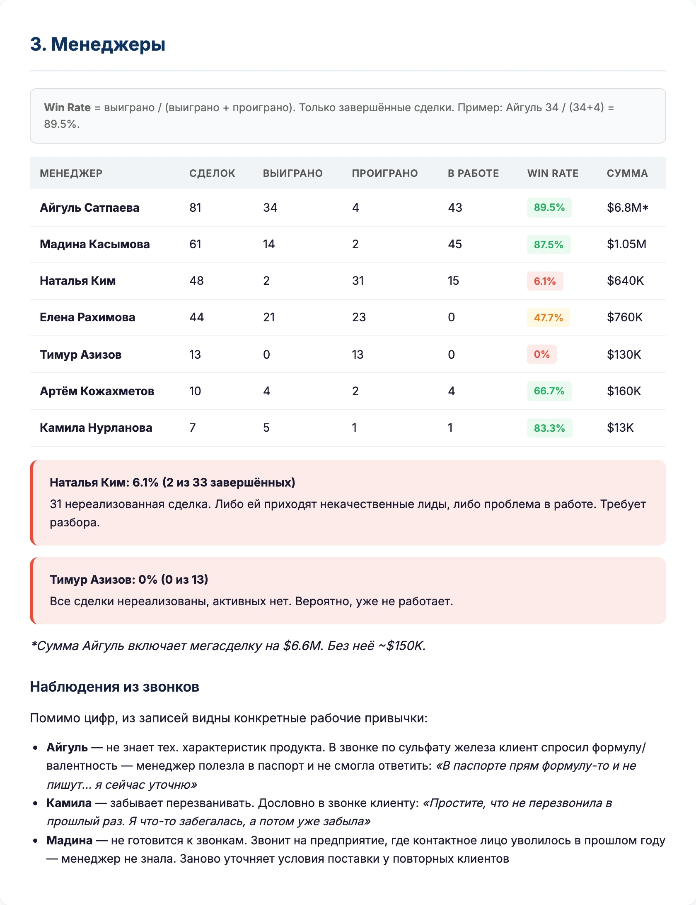
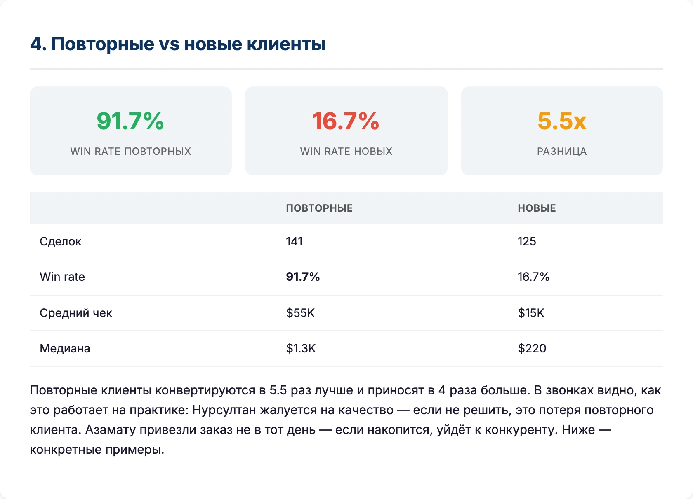

AI-аудит отдела продаж: 101 звонок и 280 сделок из CRM
Win rate 51%. Зависимость от одного контракта на 93% выручки. Менеджер, которого клиент ловит на вранье. Семь месяцев без фоллоуапа по отправленным образцам.
Компания поставляет химреагенты для очистки воды. B2B, тендеры, повторные клиенты, несколько менеджеров, Битрикс24. Я сам 11 лет в бизнесе, поэтому подошёл к вопросу как собственник. Меня интересуют не просто цифры, а деньги. Куда они утекают.
Цифры в статье изменены. Собственник попросил не публиковать реальные суммы. Все ситуации, звонки и проблемные точки настоящие.
Как работает AI-аудит звонков
Покажу на одном примере.
Открываю терминал. Пишу: «Транскрибируй звонок и сохрани». Закидываю ссылку на аудиофайл. Whisper превращает запись в текст.
Дальше промпт: «Ты профессиональный руководитель отдела продаж. Изучи этот звонок, найди слабые места, дай оценку и рекомендации менеджеру».
Результат. Повторный холодный звонок, фоллоуап, жёсткий отказ. Оценка — 2.4 из 10.
AI нашёл фальшивую привязку к словам клиента. Менеджер говорит: «Вы нам говорили до середины-конца февраля не рассматривайте поставщиков». Клиент это поймала и начала раздражаться. Она этого не говорила.

Манипуляция разрушает доверие мгновенно. Клиент после этого не слушает — защищается. С этой секунды звонок проигран.
Послушал запись. AI оказался прав. Клиент даёт последний шанс: «Давайте разговаривать чётко, конкретно». Менеджер путается.
Это простейший промпт и один звонок. Но дальше я пошёл глубже: загрузил все 101 запись, транскрибировал, сопоставил с 280 карточками из CRM и прогнал через несколько AI-агентов. Каждый со своей задачей: SPIN-анализ звонков, конверсия воронки, продуктовый портфель, сравнение менеджеров. Получился многостраничный отчёт с конкретными находками.

Воронка: win rate 51% и зависимость от одного контракта
280 сделок в выгрузке из CRM за пять месяцев. Win rate по завершённым сделкам — 51%. Нереализованных — на $1.3M.
Но вот ключевое: 93% всей выигранной суммы — это одна сделка. Убираете её — остаётся $480K. Бизнес с оборотом $3.5M зависит от одного контракта.

Основная масса клиентов сидит на стадиях «предложение» и «анализ потребности». Если эти сделки ускорить, это прямой рычаг роста.
Продуктовый портфель: 72% на одном продукте
Тот же перекос. 72% выручки — один продукт. Бизнес сконцентрирован на топ-3.
При этом реагент Ж, второй по количеству сделок, приносит всего 1% выручки. Менеджеры тратят на него время, а отдачи нет.
Менеджеры: цифры не врут
Win rate по менеджерам отличается в разы.
Наталья Ким — 2 завершённых сделки и 31 нереализованная. Win rate 6.1%. Либо ей идут некачественные лиды, либо проблема в работе. Нужно разбираться.
У Тимура все сделки нереализованы. AI предполагает, что он, возможно, уже не работает. Основывается на данных. Если дать больше контекста о структуре компании, копнёт глубже.

Многие дают AI мало данных и удивляются некачественным ответам. Чем больше контекста, тем точнее аудит.
Что слышно в звонках
AI транскрибировал каждый звонок и проанализировал как РОП.
Айгуль не знает технических характеристик. В звонке по сульфату железа клиент спросил формулу. Менеджер полезла в паспорт, не смогла ответить.
Камила забывает перезванивать. Дословно клиенту: «Простите, что не перезвонила, в прошлый раз я что-то забегалась, а потом уже забыла».
Мадина не готовится к звонкам. Звонит на предприятие, где контактное лицо уволилось в прошлом году. Заново уточняет условия, которые уже обсуждались.
Повторные клиенты — в 5.5 раз ценнее новых
Win rate повторных — 91%. Конвертируются в 5.5 раз лучше и приносят в 4 раза больше выручки, чем новые.

При этом повторных теряют на мелочах.
Нурсултан жалуется на качество: «Что-то перестало работать недели две, уменьшал, увеличивал дозу, но что-то с ним происходит». Если не решить, это потеря повторного клиента.
Азамату водитель приехал не в тот день. Менеджер не извинилась. Просто сказала, что уточнит.
Повторные клиенты конвертируются в 5.5 раз лучше и приносят в 4 раза больше. Терять их на забытом звонке или неправильной доставке. Эту проблему видно только в данных.
Ключевые ситуации из звонков
Клиент Руслан. Сам проверил звонки, подтвердил разговор. Говорит: ценник выше, чем у конкурентов — не сильно, но выше. Просит прислать КП с ценами. Менеджер Мадина отвечает: «Ладно, продублирую коммерческое».
Ни одного аргумента в защиту цены. Ни скидки за объём, ни обоснования стоимости. Клиент планирует заказ на полгода, потребность реальная, а менеджер его просто отпускает.
Клиент Зарина. Конкурентный бренд ушёл с рынка. Ищет аналоги, прямое окно возможностей. Говорит: «Если уже на стадии переговоров дороже, нам неинтересно их испытывать». Менеджер не обосновала цену. Окно закрывается пассивно.
Образцы без фоллоуапа. Отправили 18 июля. Следующий контакт через семь месяцев. Клиент сам напоминает дату. Образцы не испытаны. Время потеряно из-за того, что никто не перезвонил.
Тендеры: ошибки, которые стоят контрактов
Перепутали продукт. Не подались на вторую из четырёх позиций, а она была крупнейшей.
Клиент сам напоминает, что можно было продлить договор без тендера. Менеджер не знала о возможности пролонгации.
Отдельная находка: сделка на 60 тонн сульфата железа. Её нет в CRM. 450 кг реагента лежат на складе без движения, и тоже тишина.
Реакция собственника
Отправил отчёт. Вот голосовое, которое получил в ответ:
Голосовое сообщение от собственника (2 мин)
Тезисно, что он сказал:
- «Очень круто описаны косяки в звонках, конкретные кейсы, как, что, где повлияло». Можно использовать для регулярного менеджмента прямо сейчас, «прямо суперкруто».
- Сильно упрощает работу РОПа. Если снять с него рутину анализа, можно направить на активные продажи.
- Видит, что нужно разделить первичных и повторных клиентов. Повторные покупают сами. Основная работа там, где «охотники приходят без добычи».
- «Огромная благодарность за проделанную работу. Буду рад комментариям, мыслям, предложениям».
Он не сказал «хороший отчёт, спасибо». Он сказал, что хочет докрутить бизнес-процессы.
Один вечер — или постоянный контроль
Это разовый срез. Я вместе с AI посмотрел всего лишь 10 дней звонков и пять месяцев выгрузки из CRM.
Представьте, если такой анализ идёт постоянно. Каждая сделка в реальном времени транскрибируется, обрабатывается AI, просматривается вся воронка. Полный контроль отдела продаж без ручного прослушивания.
В 2026 году с AI это возможно.
Хотите ИИ-аудит своего отдела продаж?
Если у вас есть CRM и записи звонков, я могу сделать такой же разбор для вашего бизнеса.
Написать в Telegram